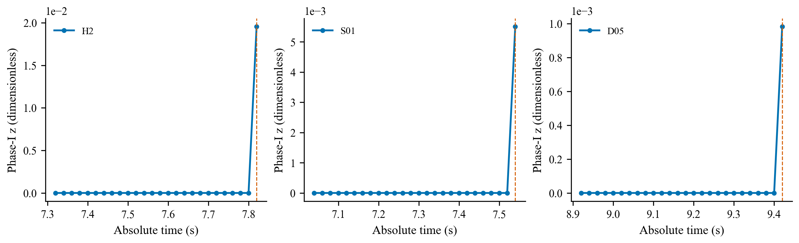
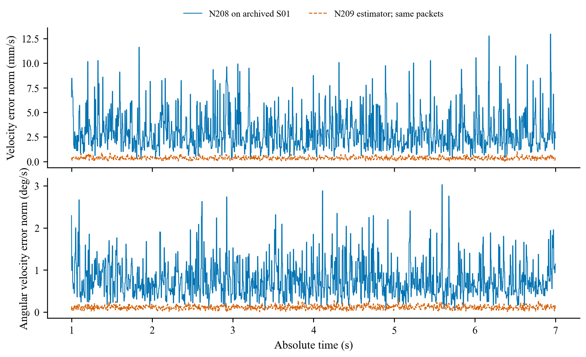
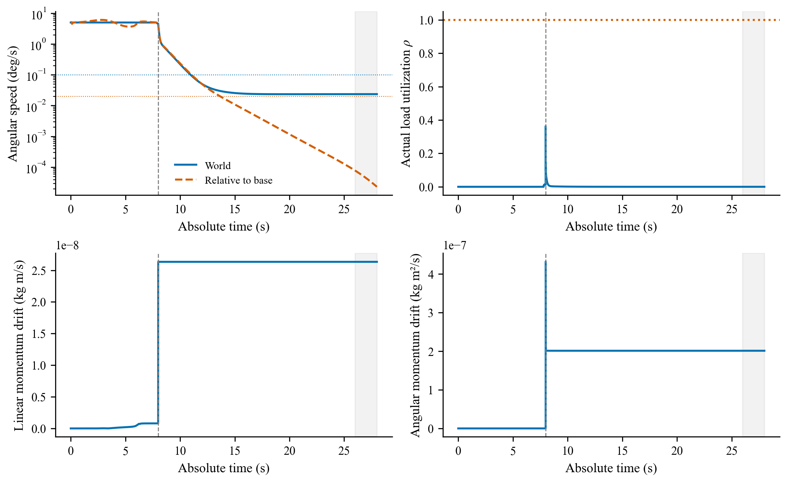
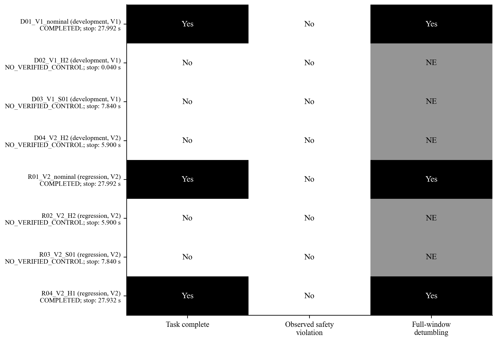
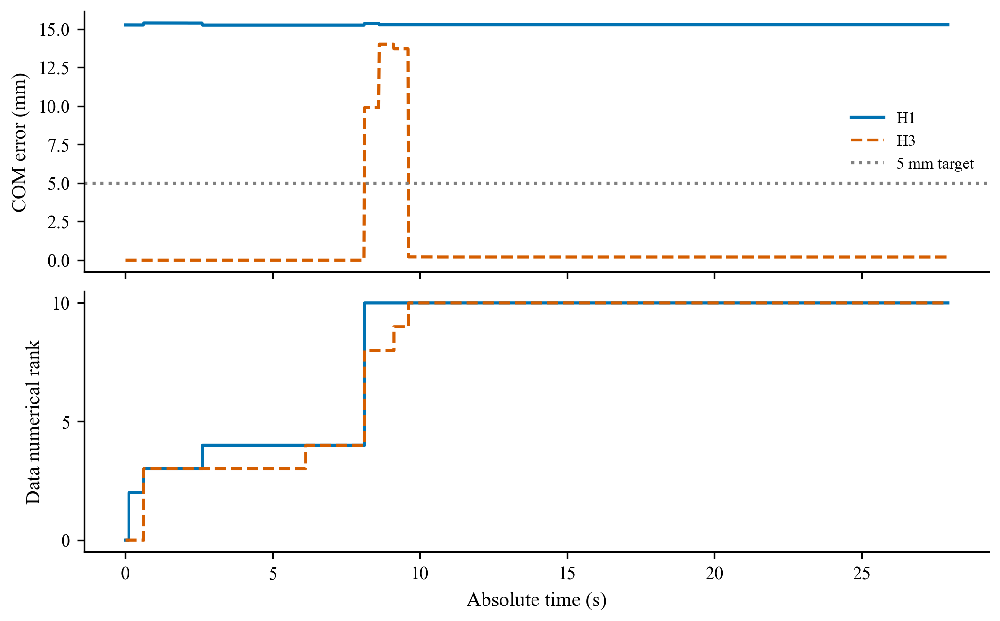

PARTIAL_OPERATING_DOMAIN_MISMATCH：8 条已见尝试，3 条完成、5 条早停。当前视频展示选定 V2 名义回归；H2/S01 未通过，独立盲测、消融和细步长未准入。视频不是新的性能验证。
从 t=0 到实际结束，30 fps 原速展示；所有画面来自已通过双重重放的同一 trace。红色为实际末端轨迹，蓝色为有效参考。体侧相机连续跟随基座姿态。
合成总览为 2880 × 1200；请全屏或按原始尺寸查看每个面板的数值，亦可打开下方独立镜头。
| 运行 / 图库 | 结果 | 结束 (s) | 锁紧 (s) | 末窗 |
|---|---|---|---|---|
| D01_V1_nominal | COMPLETED | 27.992 | 7.992 | 完整 |
| D02_V1_H2 | NO_VERIFIED_CONTROL | 0.040 | — | NOT_EVALUATED |
| D03_V1_S01 | NO_VERIFIED_CONTROL | 7.840 | — | NOT_EVALUATED |
| D04_V2_H2 | NO_VERIFIED_CONTROL | 5.900 | — | NOT_EVALUATED |
| R01_V2_nominal | COMPLETED | 27.992 | 7.992 | 完整 |
| R02_V2_H2 | NO_VERIFIED_CONTROL | 5.900 | — | NOT_EVALUATED |
| R03_V2_S01 | NO_VERIFIED_CONTROL | 7.840 | — | NOT_EVALUATED |
| R04_V2_H1 | COMPLETED | 27.932 | 7.932 | 完整 |





仅仿真；不声明硬件或实时就绪。N208 及更早结果保留为历史资料。